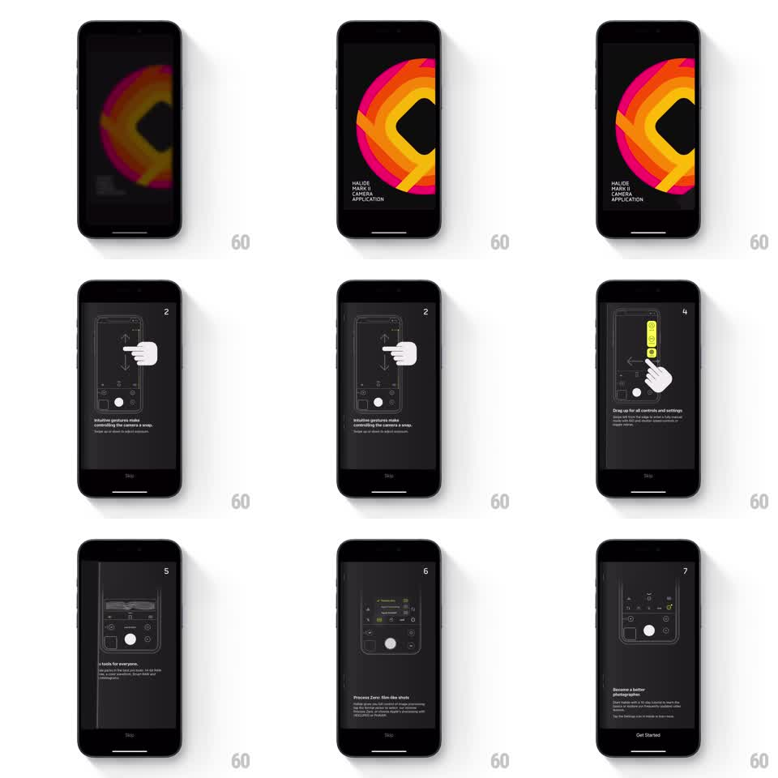

Media
Frame-by-frame

Rebuild this interaction 1:1: Halide's onboarding - dark technical manual pages that turn with a tactile 3D page-flip, each spread showing a camera-UI diagram with a hand demonstrating the gesture.

Rebuild this interaction 1:1: Halide's onboarding - dark technical manual pages that turn with a tactile 3D page-flip, each spread showing a camera-UI diagram with a hand demonstrating the gesture. ## Integration Integration: stack-agnostic spec - springs given as stiffness/damping, timed motions as duration + curve; map every value to your framework and animation library of choice. ## Scene Black manual-style pages. Cover: the Halide Mark II rainbow-ring logo with "HALIDE MARK II CAMERA APPLICATION" type. Interior spreads: line-drawn iPhone camera UI diagrams (white on dark gray) with a hand illustration mid-gesture, a page number top-right, a caption paragraph bottom-left, a Skip link bottom-center, and a Get Started button on the final page. ## Motion spec Pattern: 3D page-flip paging. - Swipe left (or tap the right edge): the current page lifts at its right edge and rotates around the left spine (rotationY 0 to -180deg, driven 1:1 by the finger), its face darkening as it turns away (gradient shadow tracking the fold). - The page has thickness: mid-flip you see the page edge and a ghost of the next page's content on the reverse. - Release past ~40% and the flip completes with a soft spring (stiffness ~220, damping ~24); release before and it springs back closed. - The next page sits static underneath, revealed progressively as the flip proceeds. - Page number and captions are printed on each page - they travel with the flip, not crossfaded. ## Calibration - The fold shadow sells the paper: a flat rotation without shading reads as a carousel. - The spring finish should land flat against the spine with no bounce - paper settles, it does not trampoline. ## Reduced motion Pages crossfade with a slight horizontal slide (200ms). ## Don't miss - The spine is the left edge for forward flips - never flip around the wrong edge. - The hand illustration points at the exact control the caption describes; keep the diagram, hand, and caption as one printed unit per page.